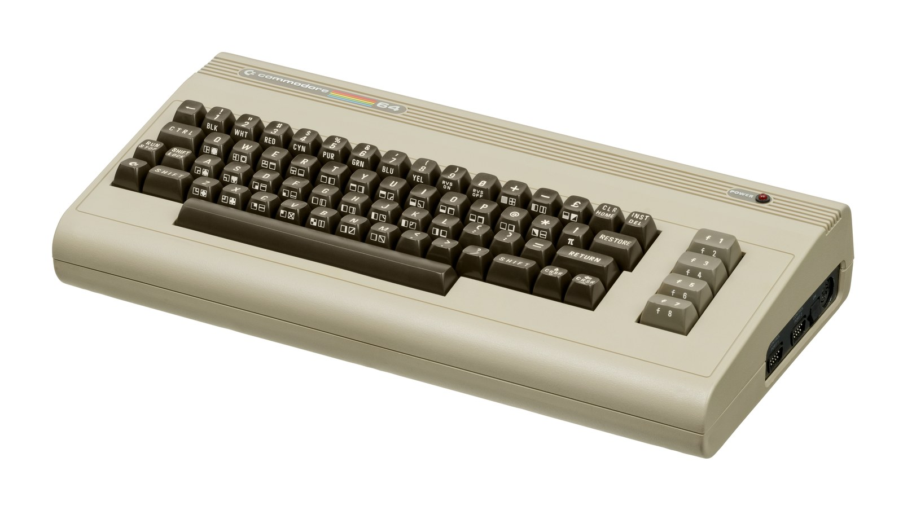

The Autopsy Report · Device #064
The Commodore 64
The best-selling single computer model of all time — a brown breadbox that outsold everything and taught millions to program. Sales & records
What is this thing?
The Commodore 64 is an 8-bit home computer from Commodore Business Machines. It takes its name from its 64 kilobytes of RAM — an almost absurd amount for a $595 home machine in 1982, when competitors shipped with 16 or 48. What made it legendary wasn't the RAM, though. It was the two custom chips Commodore's MOS Technology subsidiary built for it: the VIC-II graphics chip, with hardware sprites and smooth scrolling that made arcade-quality games possible, and the SID sound chip, a genuine three-voice synthesizer that musicians still sample today. Architecture & history · Inside the C64
Estimates put total sales between 12.5 and 17 million units — Guinness lists it as the highest-selling single computer model of all time. Exact totals vary by source, so we don't pretend to know the precise number; the shape of the fact (best-selling, by a mile) is what the record supports. Sales & records
Not yet on our bench
No C64 has sat on our bench yet. No disassembly, no chip readings, no power measurements, no original-unit photography. Everything below comes from Commodore's own published documentation — the Programmer's Reference Guide and the User's Guide, both public — plus reputable hardware histories and public teardown records. When a breadbox lands on the bench, this page gets its second act.
A short history
- January 1981MOS Technology starts designing two chips for a next-generation game console: the VIC-II for graphics and the SID for audio. The console project dies; the chips survive. History
- January 7–10, 1982Commodore shows the machine at CES in Las Vegas as the VIC-40, then renames it the C64. Price: $595. Atari's people, reportedly, couldn't believe the price. The answer was vertical integration — Commodore owned the chip fab, and each C64 cost about $135 to build. History
- August 1982Volume shipments begin. Early units have reliability troubles — notably the PLA chip — but the flood of software is coming. History
- January 1983Commodore offers a $100 trade-in rebate against any game console or computer — a move credited as a catalyst of the video game crash of 1983. Market war
- June 1983The price drops to $300; some stores sell it for $199. At one point Commodore is selling as many C64s as the rest of the industry combined. Market war
- 1983–1986The C64 holds 30–40% of the US market, selling two million units a year — outselling IBM PC compatibles, the Apple II, and Atari's 8-bits. History
- Later in the decadeThe C64C arrives: same computer, restyled into a slimmer, lighter case in the style of the C128. C64 vs C64C
- April 1994Discontinued — twelve years after launch. In 2011, seventeen years off the market, brand recognition for the model still measured 87%. History
The outside
The classic C64 is the "breadbox": a chunky brown-beige case with a full-travel keyboard, rainbow-stripe badge on the right, and every port along the back and sides. Around the machine: two 9-pin joystick ports on the right side, a cartridge slot on the back (the fast way to load games), a round DIN serial port for the 1541 floppy drive and printers, a 6-pin DIN for the Datasette cassette recorder, a 24-pin user port (edge connector) for modems and peripherals, and video out — RF to a TV's antenna screws, or composite plus separate luma/chroma (electrically S-Video-compatible) for a real monitor. Power comes from the infamous brick: +5 V DC and 9 V AC on a 7-pin DIN. Ports & power · User's Guide

One famous absence: there is no reset button — not on the original C64, not on the C64C either. Commodore didn't put reset buttons on its computers until the CBM-II line; if you wanted one, you bought a third-party cartridge with a reset button on it. When your BASIC program crashed, you reached for the power switch. Hardware notes
The board
Open a C64 and the board is a tour of MOS Technology's catalog. The MOS 6510 runs the show at 1.023 MHz (NTSC) or 0.985 MHz (PAL) — a 6502 with extra I/O lines baked in. The VIC-II draws the screen: 320×200, 16 colors, eight hardware sprites, raster interrupts. The SID (6581 in early units, 8580 later) makes the sound: three oscillators, four waveforms each, a real analog filter, ADSR envelopes. Two CIA 6526 chips handle the keyboard, joysticks, timers, and the serial bus. A much-cursed PLA chip decodes the memory map — and failed often in early units. Memory: 64 KB of RAM, 20 KB of ROM (BASIC 2.0 plus the KERNAL). Turn it on and you're greeted by a blue screen and a READY. prompt — BASIC is the user interface. Architecture · Programmer's Reference Guide
Under the microscope: the chips
Commodore published extraordinary documentation for this machine — the Programmer's Reference Guide is effectively the chip datasheets in one binding. Confirmed means Commodore's own documentation or a primary hardware record says so. Likely means reputable public records agree but we haven't traced it to a primary source.
| Chip | What it does | How we know | Dig deeper |
|---|---|---|---|
| MOS 6510 / 8500 1.023 MHz NTSC · 0.985 MHz PAL |
The main processor — a 6502 with six extra I/O lines, one of which switches the memory map. | Confirmed Commodore's Programmer's Reference Guide; corroborated by hardware histories. | Programmer's Reference Guide |
| MOS VIC-II 6567/6569 | Graphics: 320×200, 16 colors, 8 hardware sprites, raster interrupts, smooth scrolling. | Confirmed Commodore's documentation; the chip that made the C64 a games machine. | Programmer's Reference Guide |
| MOS SID 6581 / 8580 | Sound: three oscillators, four waveforms, programmable filter, ADSR — a real synthesizer on a chip. | Confirmed Commodore's documentation. Early boards carry the 6581; later ones the 8580. | Programmer's Reference Guide |
| 2× MOS CIA 6526 | Timers, keyboard scanning, joystick ports, and the serial bus. | Confirmed Commodore's documentation. | Architecture |
| PLA (programmable logic array) | Decodes addresses — decides which chip answers when the CPU talks to memory. Infamous for failing in early units. | Likely Widely documented in repair histories as the early-production failure point; exact vendor markings vary by board. | History |
| 64 KB RAM + 20 KB ROM | Working memory plus BASIC 2.0 and the KERNAL in ROM. | Confirmed Commodore's documentation; the machine's name is the RAM size. | Programmer's Reference Guide |
The board also carries Commodore's custom character ROM and the RF modulator can — and the power brick deserves its own warning: original C64 power supplies are notorious for failing high, cooking the board with overvoltage. That's a bench-safety note for the day a unit arrives, not a procedure. Power
The government's file
Here's an honest gap: we have not verified an FCC ID for the Commodore 64. Anecdotal claims about label text circulate online, but we don't publish anecdotes as facts. What the record does support: the C64's User's Guide documents Part 15 Class B compliance — the unintentional-radiator rules for home electronics. A full grant filing with internal photos, if it exists in the FCC's archive under a verifiable ID, is bench-time research. Until then, this section stays short and honest. User's Guide
Listening, not knocking
Our posture: we listen, we don't knock. The C64 predates the whole concept of a debug port — there is no console, no JTAG, no service menu. The manufacturer's interfaces are the ones on the back: the cartridge slot, the user port, the serial bus. Commodore published the full memory map and chip registers, so "listening" to a C64 means reading its documentation, which is some of the best ever written for a home computer. When a unit reaches our bench, the plan is visual inspection, power-rail checks with a modern replacement supply (never the original brick untested), and a READY-prompt smoke test. No firmware to extract — it lives in the machine's ROM, documented in the Programmer's Reference Guide. Programmer's Reference Guide
What we didn't do
- No bench work at all yet: no disassembly, no chip readings, no power measurements, no original-unit photos.
- We did not verify any FCC ID — none is claimed here.
- We did not test an original power brick, and we won't power one untested — the overvoltage failure mode is well documented.
- Nothing here touches credentials, keys, or locked functionality. The C64 has none.
By the numbers
- Machine: Commodore 64 (1982–1994) History
- CPU: MOS 6510 @ 1.023 MHz (NTSC) / 0.985 MHz (PAL) Programmer's Reference Guide
- Graphics / sound: VIC-II (320×200, 16 colors, sprites) · SID 6581/8580 (3-voice synth) Programmer's Reference Guide
- Memory: 64 KB RAM + 20 KB ROM (BASIC 2.0 + KERNAL) Programmer's Reference Guide
- Launch price: $595 (January 1982) History
- Scale: 12.5–17M units; Guinness best-selling single computer model Sales & records
- Power: +5 V DC & 9 V AC via external brick Ports & power
What awaits the bench
- A breadbox of our own — board revision, our photos, our measurements.
- Chip-marking verification: 6510 vs 8500, 6581 vs 8580, VIC-II variant, PLA date codes.
- A READY-prompt smoke test and SID audio check — with a modern replacement power supply.
- Settling the FCC question with a real label photo from a real unit.
- Video-output comparison: RF vs composite vs luma/chroma, on a modern capture.
Words to know
Every term this page uses, in plain English. No prior knowledge required.
- Sprite
- A small graphic the video chip can move around the screen by itself, without the CPU redrawing anything. The VIC-II does eight of them in hardware.
- SID (Sound Interface Device)
- A sound chip built like a synthesizer — oscillators, a programmable filter, and envelopes on one piece of silicon, rather than a simple beeper.
- VIC-II
- A video chip that draws the screen itself — pixels, colors, and hardware sprites — so the CPU doesn't have to redraw everything by hand.
- KERNAL
- The C64's built-in operating-system routines in ROM — screen, keyboard, disk, tape. (Yes, Commodore spelled it with an A.)
- PLA
- Programmable logic array — the chip that decodes which part of the C64 answers each memory address. Early ones failed a lot.
- Datasette
- Commodore's cassette recorder for loading and saving programs — slow, but it worked.
- RF modulator
- The circuit that turns the computer's video into a TV-channel signal you could tune in on a regular television.
- POKE
- A BASIC command that writes a value straight into a memory address.
- Part 15 Class B
- The FCC's emissions rules for home electronics — devices that don't mean to transmit radio still have to keep their unintentional noise below limits.
Sources & confidence
- Architecture, chip names, clocks, memory sizes, ports, power: Commodore's Programmer's Reference Guide and hardware histories. High confidence.
- History, prices, sales figures, Guinness record: the hardware history record. High confidence in the shape; exact sales totals vary by source and are given as a range.
- No reset button on C64/C64C: the hardware record. High confidence.
- FCC: no verified ID — stated as unknown, honestly. Part 15 Class B per the User's Guide.
- Anything not listed here is unknown until the bench says otherwise. We'll say so, out loud, when that's the case.
The device photo is a freely licensed stock photo, credited in its caption — not a photo of our own unit, because we don't have one yet.
Legal note. BareBoard is an educational project. Everything on this page is our own writing based on public documents — our summaries, our analysis. We don't publish, host, or distribute firmware, keys, passwords, or credentials. Product names and trademarks belong to their respective owners and appear here only to identify the hardware. If you believe anything here infringes your rights, contact us and we'll address it promptly.